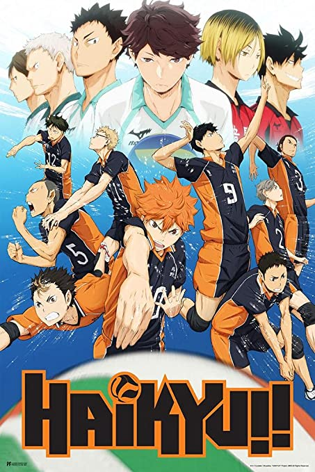
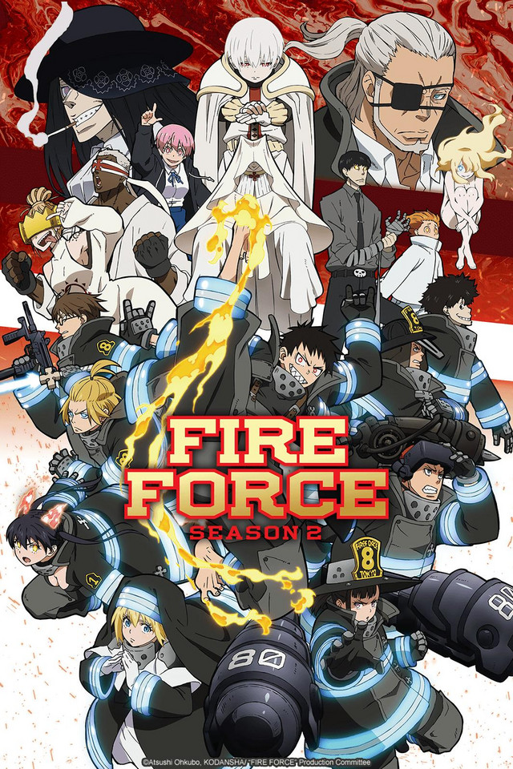
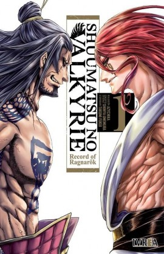
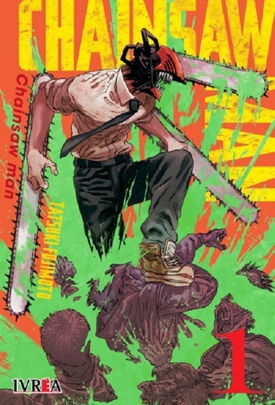

¡Recomendaciones de la semana!

Kimetsu no Yaiba
Anime, Concluido, Shonen.

Haikyuu
Anime, Concluido, Deportes.

Fire Force
Anime, Concluido, Bomberos.

Jujutsu Kaisen
Anime, Concluido, Sobrenatural.

Berserk
Manga, No Concluido, Seinen.

Tokyo Ghoul
Manga, Concluido, Seinen

Shuumatsu
Manga, Concluido, Shonen.

Chainsaw Man
Manga, Concluido, Shonen.